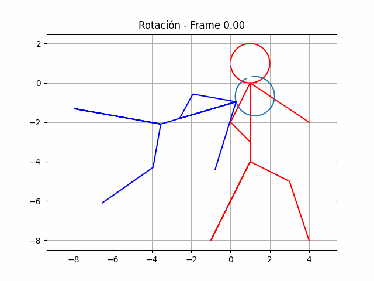
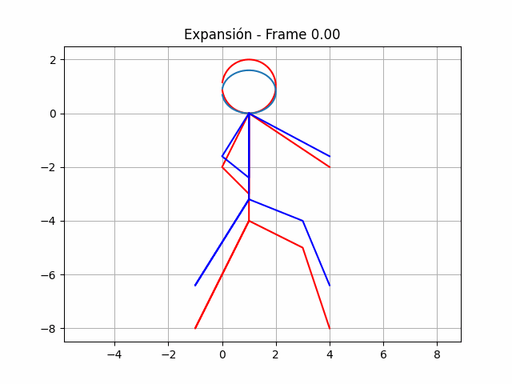
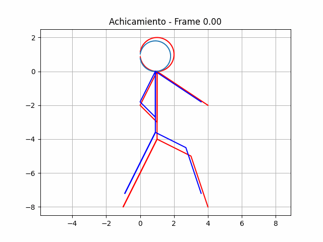
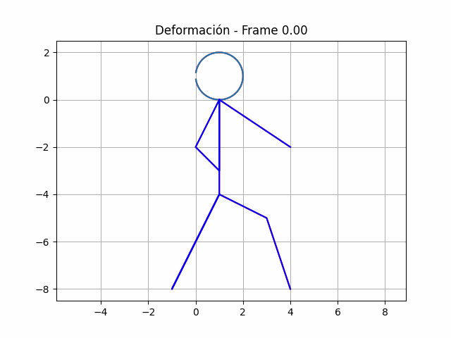

Definicion
Una transformación lineal es una función entre dos espacios vectoriales que preserva las operaciones de suma vectorial y multiplicación por escalares.
Formalmente, sea V y W dos espacios vectoriales sobre un mismo campo F, una función T:V→W se considera una transformación lineal si cumple con las siguientes dos
propiedades para todo u,v en V y todo escalar c en F:
Aditividad: T(u + v) = T(u) + T(v)
Homogeneidad: T(cu) = cT(u)
Estas propiedades aseguran que la transformación lineal preserva las operaciones fundamentales en los espacios vectoriales, es decir, la suma de vectores y
la multiplicación por escalares. En otras palabras, la imagen de la suma de dos vectores es igual a la suma de las imágenes de cada vector por separado, y la
imagen del producto de un vector por un escalar es igual al producto del escalar por la imagen del vector.
Las transformaciones lineales son fundamentales en álgebra lineal y tienen una amplia variedad de aplicaciones en matemáticas y ciencias aplicadas. Pueden
representarse mediante matrices, lo que facilita su análisis y manipulación.
Usaremos Python para ejecutar y graficar las figuras.
La siguiente función de transformacion dibuja una cara y un cuerpo, luego aplica una transformación lineal representada por la matriz A y muestra el resultado en un gráfico.
El ejemplo de uso usa una matriz de identidad para una transformación inicial.
import numpy as np
import matplotlib.pyplot as plt
def transformacion(A):
# Dibuja la cara
t = np.arange(-3, 3, 0.01)
x = np.cos(t) + 1
y = np.sin(t) + 1
plt.plot(x, y, 'r')
# Dibuja el cuerpo
x1 = np.array([4, 1, 0, 1, 1, 1, -1, 1, 3, 4])
y1 = np.array([-2, 0, -2, -3, 0, -4, -8, -4, -5, -8])
plt.plot(x1, y1, 'r')
# Forma la matriz de puntos
Pcara = np.vstack((x, y))
Pcuerpo = np.vstack((x1, y1))
# Aplica una transformación lineal de R2 en R2 cuya matriz asociada es la ingresada A
Imcara = np.dot(A, Pcara)
Imcuerpo = np.dot(A, Pcuerpo)
xim, yim = Imcara[0, :], Imcara[1, :]
x1im, y1im = Imcuerpo[0, :], Imcuerpo[1, :]
plt.plot(xim, yim, x1im, y1im, 'b')
plt.grid()
plt.axis('equal')
plt.show()
# Ejemplo de uso
# Ingresa la matriz asociada A desde el teclado
A = np.array([[1, 0],
[0, 1]])
transformacion(A)
Rotación
El siguiente código crea una animación en Matplotlib que muestra la transformación de un círculo y una forma irregular mediante una secuencia de transformaciones lineales.
La función transformacion_animada toma una lista de matrices de transformación y genera la animación.
# Crear una lista de matrices de transformación para cada animación
rotar_animacion = [np.array([[np.cos(theta), -np.sin(theta)],
[np.sin(theta), np.cos(theta)]]) for theta in np.linspace(5, 2*np.pi, 100)]
# Crear y mostrar animaciones
transformacion_animada(rotar_animacion, 'Rotación')

Expancion
El siguiente código crea una animación en Matplotlib que muestra la transformación de un círculo y una forma irregular mediante una secuencia de transformaciones lineales.
La función transformacion_animada toma una lista de matrices de transformación y genera la animación.
# Crear una lista de matrices de transformación para cada animación
expandir_animacion = [np.array([[1 + 0.03 * i, 0],
[0, 0.8 + 0.03 * i]]) for i in range(100)]
# Crear y mostrar animaciones
transformacion_animada(expandir_animacion, 'Expansión')

Achicar
El siguiente código crea una animación en Matplotlib que muestra la transformación de un círculo y una forma irregular mediante una secuencia de transformaciones lineales.
La función transformacion_animada toma una lista de matrices de transformación y genera la animación.
# Crear una lista de matrices de transformación para cada animación
achicar_animacion = [np.array([[0.9 - 0.01 * i, 0],
[0, 0.9 - 0.01 * i]]) for i in range(100)]
# Crear y mostrar animaciones
transformacion_animada(achicar_animacion, 'Achicamiento')

Rotación
El siguiente código crea una animación en Matplotlib que muestra la transformación de un círculo y una forma irregular mediante una secuencia de transformaciones lineales.
La función transformacion_animada toma una lista de matrices de transformación y genera la animación.
# Crear una lista de matrices de transformación para cada animación
deformar_animacion = [np.array([[1, 0.5 * np.sin(theta)],
[0, 1]]) for theta in np.linspace(0, 2*np.pi, 100)]
# Crear y mostrar animaciones
transformacion_animada(deformar_animacion, 'Deformación')
